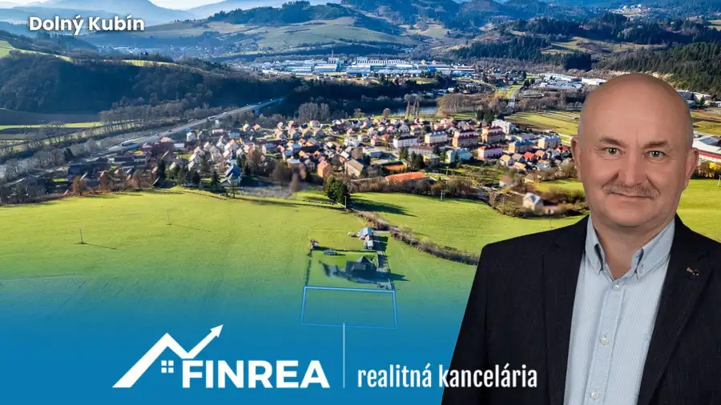
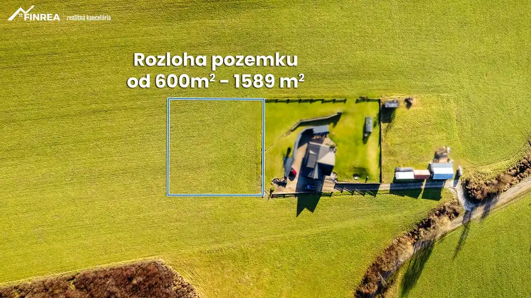
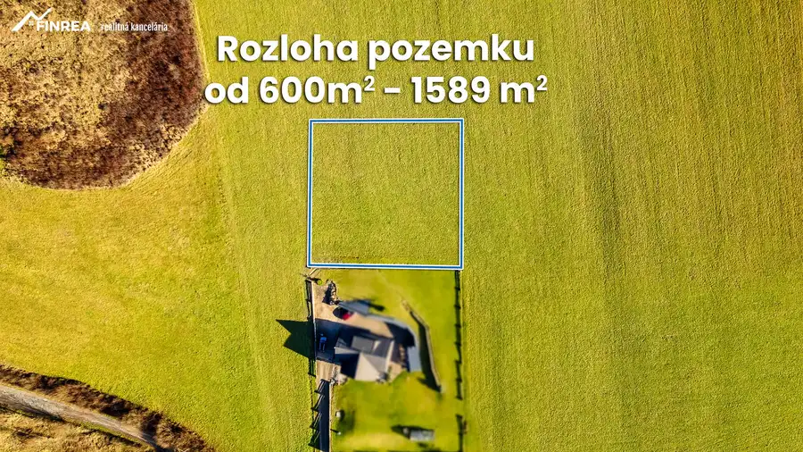
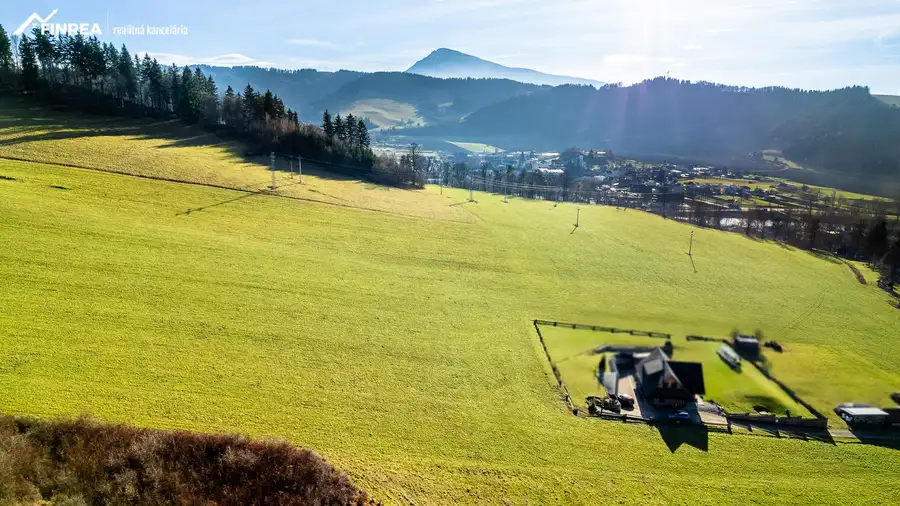
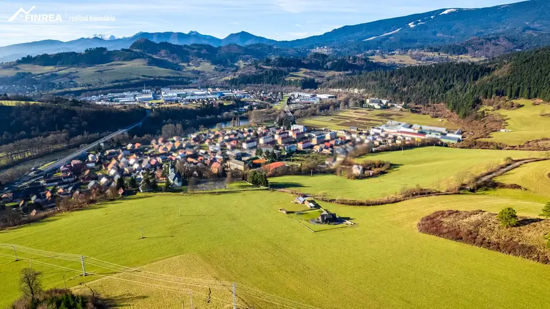
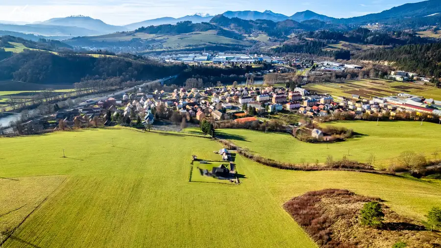
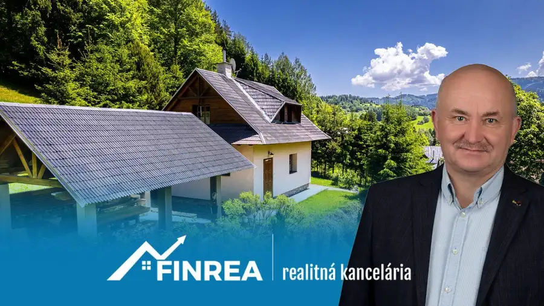
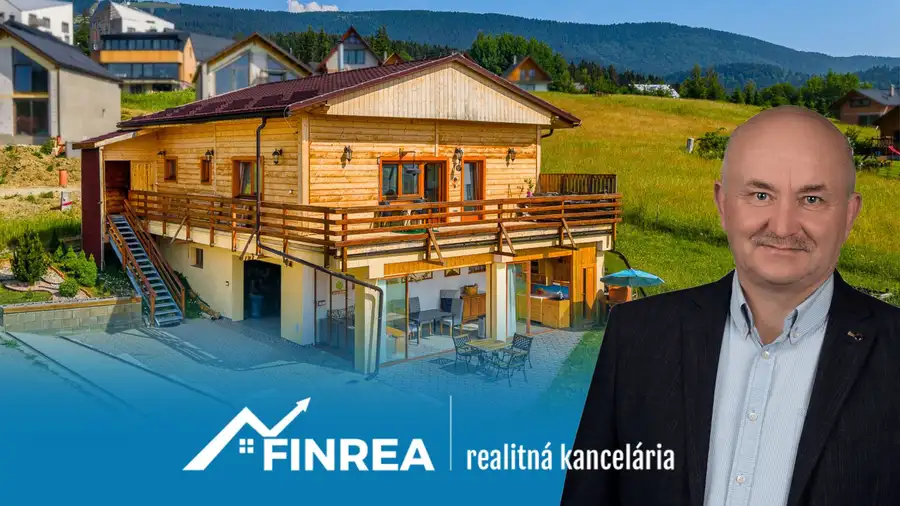
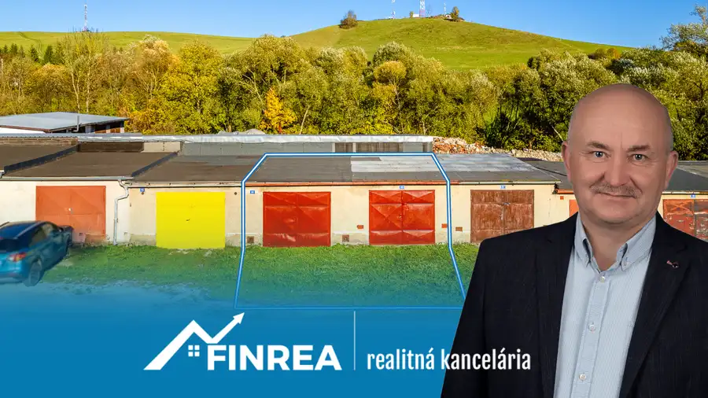

FINREA│Slnečný pozemok Dolný Kubín - Kňažia
Dolný Kubín






- Plocha600 m²
- VlastníctvoOsobné
O nehnuteľnosti
Máte radi slnko a snívate o dome na slnečnej stráni s krásnym výhľadom?Možno práve tu nájdete miesto, kde si postavíte svoj vysnívaný domov.Ponúkame na predaj slnečný, mierne svahovitý stavebný pozemok v atraktívnej a rozvíjajúcej sa časti mesta Kňažia – lokalita Nad kostolom v Dolnom Kubíne. Poloha pozemku je ideálna pre pokojné rodinné bývanie s výhodami mesta na dosah.Prečo je tento pozemok zaujímavý?☀ Celodenné slnko – orientácia na slnečnej stráni zabezpečuje príjemné svetlo počas celého dňa🌄 Krásne panoramatické výhľady – otvorený pohľad na okolitú prírodu a krajinu Oravy📐 Flexibilná výmera – od 600 m² do 1589 m² – vy si vyberiete presne takú veľkosť, akú potrebujete pre svoj projekt🏡 Ideálne miesto pre rodinný dom – dostatok priestoru na dom, záhradu, terasu či oddychovú zónu📈 Investičný potenciál – lokalita sa postupne rozvíja a získava na atraktiviteVýborná dostupnosťKňažia ponúka pokojné bývanie s rýchlou dostupnosťou do centra Dolného Kubína.autobusové zastávky a MHD v blízkostiželezničná zastávka v Mokradirýchle spojenie do centra mestaKompletná občianska vybavenosťV okolí nájdete všetko potrebné pre pohodlný rodinný život:materská školazákladná škola aj stredná školaobchododdychová zóna a park pri rieke Orava vhodný na prechádzky, šport či cyklistikuMiesto pre váš nový začiatokPozrite si video: https://www.youtube.com/watch?v=J0pKU7vVZgMTento pozemok ponúka ideálnu kombináciu prírody, slnka, výhľadov a dostupnosti mesta. Vytvorte si tu domov presne podľa svojich predstáv – s veľkosťou pozemku, ktorá vám bude vyhovovať.📞 Pre viac informácií alebo obhliadku ma neváhajte kontaktovať 0901785829 , ladislav.adamec@finrea.skUpozornenie: Popis nehnuteľnosti - text alebo časť textu, fotodokumentácia a video sú majetkom a autorským dielom spoločnosti FINREA s.r.o. a ich použitie je spoplatnené podľa cenníku uvedeného na www.finrea.sk. Pri viacerých záujemcoch o nehnuteľnosť, majiteľ si vyhradzuje právo vybrať záujemcu s najvýhodnejšou ponukou. FINREA│Realitná kancelária je členom Realitnej únie SR a riadi sa jej Realitným kódexom. Uvedená cena zahŕňa odmenu realitnej kancelárie, právny servis, úhradu základného správneho poplatku na katastri a bezplatnú pomoc s vybavením financovania prostredníctvom hypotéky.Upozornenie: Popis nehnuteľnosti - text alebo časť textu, fotodokumentácia a video sú majetkom a autorským dielom spoločnosti FINREA s.r.o. a ich použitie je spoplatnené podľa cenníku uvedeného na www.finrea.sk. Pri viacerých záujemcoch o nehnuteľnosť si majiteľ vyhradzuje právo vybrať záujemcu s najvýhodnejšou ponukou.
Parametre
- Druh
- Pozemok pre rodinné domy
- Dátum zverejnenia
- 10. 03. 2026
- Elektrina
- Pri pozemku
- Plocha pozemku
- 600 m²
- Terén pozemku
- Mierne svahovitý
- Typ
- Predaj
- Vlastníctvo
- Osobné
- Voda
- Pri pozemku
- Územie
- Intravilán
Kde to je


Mohlo by Vás zaujímať

DomNové 249 900 €FINREA│Vidiecky dom na veľkorysom pozemku v Zázrivej Zázrivá 68 m²
Chalupa, rekreačný domčekNové 366 000 €FINREA│Na predaj celoročne obývateľná chata na Kubínskej holi s vlastným pozemkom Dolný Kubín 166 m²
Komerčné priestoryNové 40 000 €FINREA | Dvojgaráž v obci Istebné Istebné 77 m²